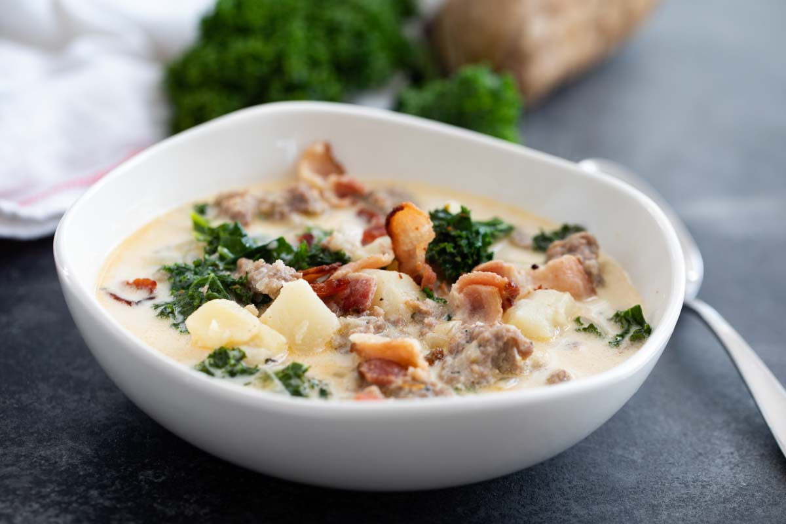

Zuppa Toscana

A direct copy of Olive Garden's most popular soup.
Nothing warms better than a bowl of Zuppa Toscana, a hearty italian soup comprised of potato, sausage, kale, and spices.
Ingredients
- 6oz Bacon
- 1lb Italian Sausage
- 1 Head Garlic - 8-10 cloves
- 1 Medium Onion
- 4 Cups Chicken Broth
- 5 Medium Russet Potatoes
- 1 Kale Bundle - 3-4 large leaves
- 1 Cup Whipping Cream
- 1 Cup Parmesan Cheese
Process
- In a large pot or dutch oven, over medium-high heat, add chopped bacon and sauté until browned (5-7 mins). Remove bacon to a paper-towel lined plate and spoon out excess oil, leaving about 1 Tbsp oil in the pot.
- Add Italian sausage, breaking it up with your spatula and sauté until cooked through (5 min). Remove to paper towel lined plate.
- Finely dice onion and add to the pot. Saute 5 min or until soft and golden then add minced garlic and saute 1 min.
- Add 4 cups broth and 6 cups water, and bring to boil. Add sliced potatoes and cook 13-14 min or until easily pierced with a fork.
- When potatoes nearly done, add chopped kale and cooked sausage and bring everything to a light boil.
- Stir in 1 cup cream and bring to boil. Season to taste with salt and black pepper then remove from heat. Garnish with bacon and grated parmesan.
Back to Index